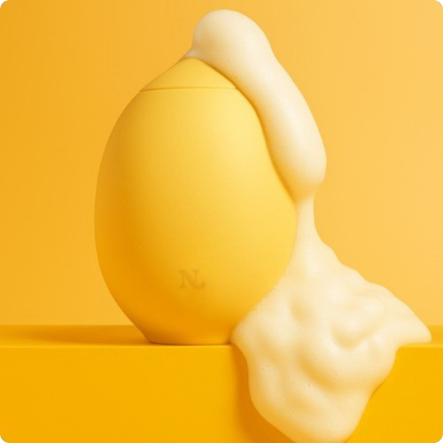
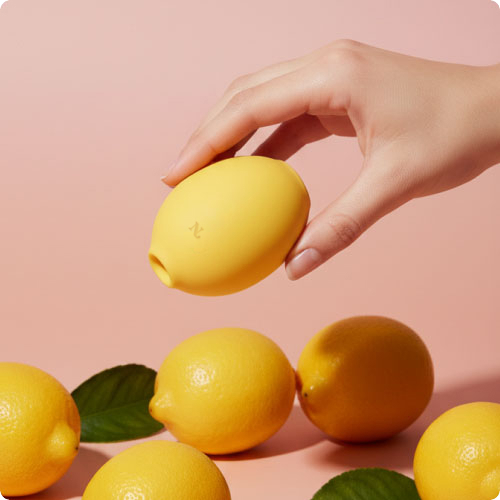
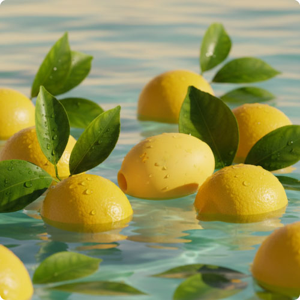
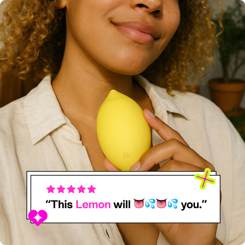
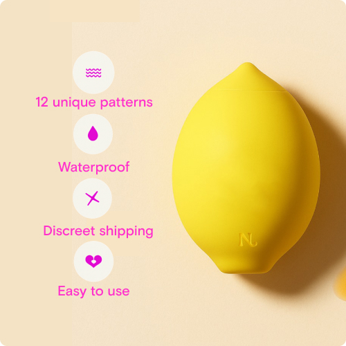
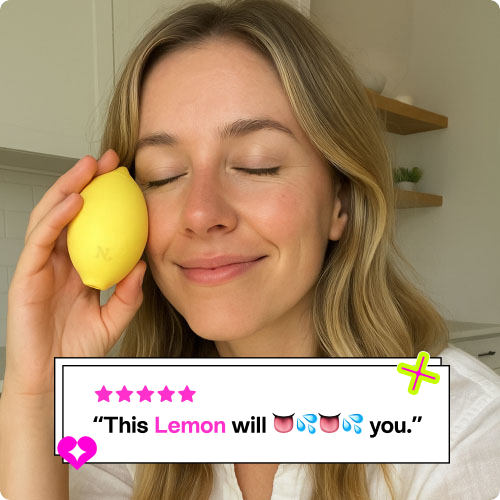

Wat als de beste seks van je leven met jezelf was?
Ontdek het 15-minuten ritueel dat duizenden vrouwen helpt om hun plezier terug te winnen—zonder schaamte, oordeel of excuses.

We zijn er allemaal geweest...
"Ik wist niet waar ik moest beginnen." "Ik voelde me ongemakkelijk." "Ik dacht dat het niets voor mij zou zijn."
De Genotskloof
De maatschappij leerde ons om het plezier van anderen boven dat van onszelf te stellen. Het is tijd om die kloof te dichten.
De Intimidatiefactor
De meeste speeltjes zien eruit als sci-fi wapens. Wij wilden iets dat vriendelijk, schattig en benaderbaar voelde.
Stilte & Schaamte
40% van de vrouwen weet niet waar te beginnen met zelfbevrediging. Wij doorbreken die stilte.
Waarom "Luchtpuls" Alles Verandert
Vergeet wat je weet over vibratie. Traditionele vibrators kunnen het oppervlak verdoven. Lem gebruikt Luchtpuls Technologie om zachte drukgolven te creëren die de sensatie van oraal plezier nabootsen.
Geen Direct Contact Nodig
Lem zweeft boven je gevoelige plekje en gebruikt luchtgolven om diepe zenuwuiteinden te stimuleren zonder irritatie.
Geen Gevoelloosheid
Omdat het niet afhankelijk is van intense wrijving, kun je langer genieten en sterker eindigen, elke keer weer.
Gegarandeerde Release
Studies tonen aan dat Luchtpuls technologie meer dan 90% van de vrouwen helpt om een hoogtepunt te bereiken—zelfs degenen die moeite hebben met andere methoden.
Ouderwetse Vibratie
Oppervlakkig, verdovend, vaak te intens of irriterend.
Luchtpuls Tech
Diepe, resonerende drukgolven die plezier opbouwen zonder verdoving.
Ontmoet Lem
De kleine gele vriend die het gesprek over zelfbevrediging verandert.

01Fluisterstil
Discreet genoeg om te gebruiken als huisgenoten thuis zijn. Krachtig genoeg om je daar te brengen.
02Lichaamsveilige Siliconen
Gemaakt van premium, medische siliconen die fluweelzacht aanvoelen en gemakkelijk schoon te maken zijn.
03Waterdicht
Badtijd is net een stuk interessanter geworden. Volledig onderdompelbaar voor wateravonturen.
Niet Alle Speeltjes Zijn Hetzelfde
Waarom duizenden vrouwen overstappen op Lem.
Generieke Vibrators
Lem
Echte Verhalen, Echt Plezier
"Ik was eerst sceptisch, maar Lem veranderde mijn perspectief volledig. Het is zacht maar effectief, en ik voel me eindelijk comfortabel om mijn eigen lichaam te verkennen."
"Het 15-minuten ritueel is echt! Als moeder van twee heb ik zelden tijd voor mezelf. Lem helpt me snel te reconnecten en op te laden."
"Ik hou van het ontwerp! Het ziet er niet uit als een eng seksspeeltje. Het staat op mijn nachtkastje en ziet er gewoon uit als een schattig accessoire. Plus, de sensatie is ongelooflijk."
Lem in het Wild
Sluit je aan bij de gemeenschap van vrouwen waarbij plezier voorop staat.



